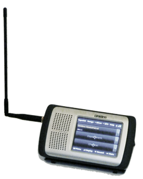
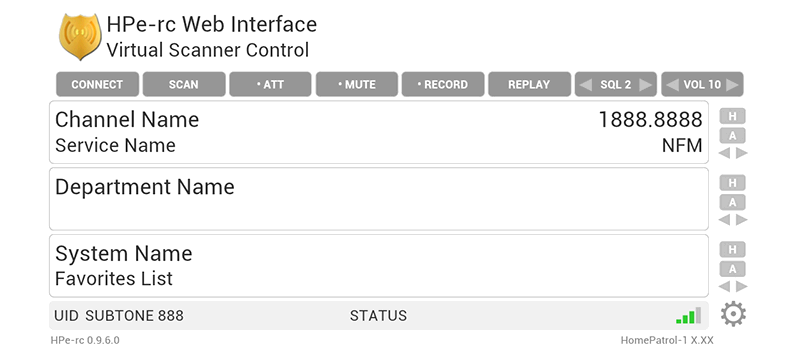
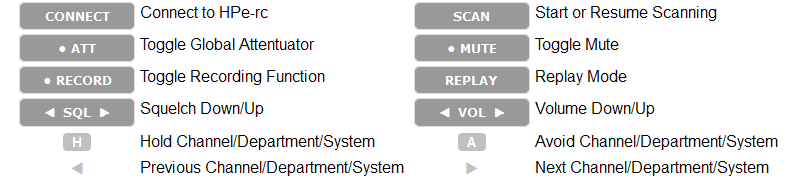

A Command-Line Utility for the Uniden HomePatrol 
HPe-rc is a command line program for controlling the Uniden HomePatrol-1 Scanner. All functions of the published remote control specification (2.05) are implemented, including downloading audio files and reading raw discriminator data.
Binaries are available for Windows systems. The source code will run on any system with Python 2.6 or 2.7, and the pySerial module.
This program requires a HomePatrol Scanner with firmware version 2.02 or higher and the optional Extreme Upgrade. A USB connection and working USB Serial Port drivers are also required.
USB Serial Port drivers for Windows systems are available from Uniden. Windows will also require MSVCR90.DLL, which can be downloaded from Microsoft if it is not already available on the system. This software has been tested with the Uniden serial driver on Windows 2000, XP, Windows 7 and 8.
For Microsoft Windows, HPe-rc is distributed as a compressed (zip) archive which includes a self-extracting installer. Downloads for 64-bit and 32-bit systems are available. Extract and run the installer.
For Linux and similar systems, HPe-rc is distributed as a compressed (tar.gz) archive which contains the program source. Extract and run HPe-rc.py using the python interpreter.
The HomePatrol and PC should be connected using the USB cable. Select "Serial Port" when prompted on the scanner screen. To start using HPe-rc, specify the serial port where the scanner is connected. Parameters are changed using the set command.
Example: Not Connected> set port1=com6
Before issuing commands, open a connection to the HP-1 using the open command.
Example: Not Connected> open
To stop the connection to the scanner, use the close command. Open serial ports are also closed when using the bye command to exit the program.
Example: HomePatrol-1> bye
See the following sections for information on setting parameters and available commands.
Commands may also be read from a text file. Enter one command per line, then pipe the file to HPe-rc.
Example: C:\Program Files\HPe-rc>hpe-rc port1=com6 <commands.txt
A single command may be specified on the command-line by using the cmd parameter. HPe-rc will execute the command, then exit.
Example: C:\Program Files\HPe-rc>hpe-rc cmd=web
Parameters can be set on the command line, or within the program itself. Multiple parameters can set on one line, and keywords may be specified as upper or lower case.
Example: C:\Program Files\HPe-rc>hpe-rc loglevel=10 logfile=ON
Or: HomePatrol-1> set loglevel=10 logfile=ON
To see the current settings, type get at the HPe-rc prompt. For a subset of settings, type get followed by a string, such as "path" to match all settings which contain that word.
Example: HomePatrol-1> get path
Parameters also can be saved and loaded together in sets using the save and load commands.
Example: HomePatrol-1> save acars
A set of default values which cannot be modified is created when a set is first saved. To reload these values, type load DEFAULT at the HPe-rc command prompt. Settings can also be quickly saved and restored by using save and load without a set name.``
port1 |
The serial port used to connect to the scanner |
port2 |
A serial port used for raw data output |
port1_baud |
Baud rate for port1 |
port2_baud |
Baud rate for port2 |
loglevel |
Set to 10 to display debugging information |
logfile |
Set ON to log debugging information to disk |
cfg_path |
Location to save config files |
Serial ports should be specified by the name used by the operating system, for instance, com5 or /dev/ttyS1. Set port1 to AUTO to attempt to detect the correct port. In some cases, the auto-detection may not work. Example: Not Connected> set port1=AUTO See the Raw Data, Monitor Mode and Audio Feed sections for parameters specific to those operations.
By default, HPe-rc matches the HP-1's internal format for naming audio files (2012-03-21_20-14-13) for all file types so that files have consistent names. Customizing the dateformat will keep this consistency - even when downloading audio files.
Files will be overwritten unless a format specifier is used that varies with each file, seconds (%S) for example. Characters which are not valid in file names will be removed or replaced.
| %a | Abbreviated Weekday |
| %A | Full Weekday Name |
| %b | Abbreviated Month |
| %B | Full Month Name |
| %d | Day of the Month [01-31] |
| %H | Hour, 24 hour [00-23] |
| %I | Hour, 12 hour [01-12] |
| %j | Day of the Year [001-366] |
| %m | Month [01-12] |
| %M | Minute [00-59] |
| %p | AM or PM |
| %S | Seconds [00-61] |
| %y | Year, 2 digit [00-99] |
| %Y | Year, 4 digit |
Example: HomePatrol-1> set dateformat=%Y-%m-%d_%H-%M-%S
A complete list of date format specifiers is available here.
Variables can be used in several parameters to include system-specific information. The information available depends on the type of system and other settings on the scanner.
| %(tgid)% | Talkgroup ID or Frequency |
| %(frequency)% | Frequency or Talkgroup ID |
| %(mode)% | AM, FM or NFM |
| %(att)% | Attenuator Setting [ON or OFF] |
| %(subtone)% | CTCSS/DCS code |
| %(nac)% | NAC Code |
| %(service_tag)% | Service Tag |
| %(system)% | System Name |
| %(department)% | Department Name |
| %(channel)% | Channel Name |
| %(squelch)% | Squelch Setting [0-15] |
| %(mute)% | Mute Setting [ON or OFF] |
| %(signal)% | Signal Level [0-4] |
| %(uid)% | Unit ID |
| %(favorites_list)% | Favorites List |
| %(config_set)% | Name of current config set |
| %(date)% | Date/Time (see Date Format) |
| %(space)% | Space Character |
In addition, ~ or ~user can be used in path names for the current user's home directory.
[Version 0.9+] The Web UI allows the scanner's operation to be monitored and controlled using a web browser. This feature requires javascript/jQuery/ajax support.
Use the web command to start the Web UI, then open your web browser to the host and port of the computer where the scanner is connected. This will be http://localhost:8000 or http://127.0.0.1:8000 if the browser and HPe-rc are running on the same machine. The port and other parameters can be changed using the set command.
web_port |
Web Server Port |
web_readonly |
Disable commands from web browser [ON or OFF] |
web_ip |
List of IP addresses allowed access |
web_check |
Seconds between checks for audio files to download |
ajax_refresh |
Data refresh rate in milliseconds |
See Monitor Mode for additional settings that also apply when using the Web UI.
The Web UI can also be accessed over a LAN or the Internet with a properly configured computer and router. Check the router documentation for more information on setting firewall and port forwarding options. Access can be restricted to only allowed IP addresses using the web_ip parameter. Commands can be ignored from the web browser by setting web_readonly to ON. Although multiple web clients can simultaneously access the scanner data, performance may suffer.
The rate of data requests from the web browser is controlled by ajax_refresh. Increasing this value may improve performance on limited platforms, such as a smartphone, tablet or Kindle. It may also help on busy networks or with multiple clients using the Web UI at the same time.
Audio files can be periodically downloaded from the scanner's recording buffer while using the Web UI. Set web_check to the number of seconds between checks. (0=disable) Files will be transfered when the scanner is idle whenever possible. By default, the scanner beeps when checking for new files. This can be disabled by setting the screen tap sound to OFF using the scanner menu or Sentinel software. Real-time scanning status is not available while downloading files.
Example: HomePatrol-1> web
 
[Version 0.9.5+] Touchscreen controls: The Previous, Hold or Next functions for the Channel, Department or System can be activated by touching the left, center or right section of the display area.
Note: Using Internet Explorer to access the Web UI is not recommended. For best results, use Firefox or Chrome.
Monitor Mode displays an ongoing display of the scanner's status, and optionally, logs this information to disk. The monitor mode log can be customized by specifying a string of data variables to include using the mon_format parameter. Not all fields will be available depending on the type of system being monitored. When mon_file is set to ON, the log file will be saved to disk. Use the monitor command to start.
mon_format |
Format string |
mon_file |
Save to disk [ON or OFF] |
mon_cmd |
Allow key commands [ON or OFF] |
mon_path |
Location to save monitor files |
mon_expire |
Minimum time in seconds before channel data is expired |
Example: HomePatrol-1> set mon_format=%(date)%,%(channel)%``,%(department)%,%(frequency)%
Example: HomePatrol-1> monitor
[Version 0.5+] Key commands can be used in monitor mode to control the scanner.
| a | Avoid Channel |
| c | Hold Channel |
| d | Hold Department |
| s | Hold System |
| n | Next Channel |
| p | Previous Channel |
| m | Mute |
| + | Volume Up |
| - | Volume Down |
| q | Exit Monitor Mode |
[Version 0.7+] By default, a channel is not logged to disk when the same channel is subsequently received, regardless of the length of time between transmissions. To change this behavior, set the mon_expire parameter to the minimum number of seconds to wait before logging the same channel again. (0 will disable this feature.) Channels will not be logged more than once for the same transmission.
The audio feed mode downloads WAV files from the recording buffer on the scanner. Files are named according to the dateformat parameter. By default, this matches the format used internally by the scanner. Audio files are automatically deleted after they are transferred successfully.
feed_loop |
Continue to check for new files [ON or OFF] |
feed_delay |
Milliseconds between checks for new files |
feed_path |
Location to save audio files |
Example: HomePatrol-1> feed on
System information from the recordings will be displayed as the files are transferred. With variable substitutions, this information can be used to save recordings in directories based on channel, department, system, service tag or favorites list using the feed_path parameter.
Example: HomePatrol-1> set feed_path=~\feeds\%(system)%\%(department)%\%(channel)%
Directories will be created if they do not exist. Characters which are not valid in directory names will be removed or replaced, so information may not match what is displayed on the scanner.
Audio Feed mode is automatically stopped once all files have been transferred, unless the feed_loop parameter is ON. The process may also aborted by pressing Control-C on the keyboard.
All available meta-data about recordings is saved with the audio files in JSON format.
This mode may be stopped manually by using the feed off command. It should not be necessary to use this command unless the scanner is stuck in feed mode.
Example: HomePatrol-1> feed off
This feature is still under development. This documentation may not reflect the latest changes.
rd_freq |
Frequency to monitor [HZ] |
rd_mode |
Modulation mode [AUTO, AM, FM OR NFM] |
rd_att |
Attenuator setting [ON or OFF] |
rd_timeout |
Seconds with no input before timeout |
rd_rectime |
Seconds to record data |
rd_file |
Write to file [ON or OFF] |
rd_path |
Location to save data files |
rd_sample |
Data slicer sample size |
rd_filter |
Low-Pass filter [ON or OFF] |
rd_threshold |
Data slicer decode threshold level |
Use the set command to setup a raw data session. Frequencies entered in megahertz are automatically converted to hertz.
Example: HomePatrol-1> set rd_freq=131.550 rd_file=ON
Start raw mode by using the raw command. The data capture may be aborted by pressing the STOP button on the scanner screen, pressing Control-C on the keyboard, or by specifying a maximum recording time using the rd_rectime parameter.
Example: HomePatrol-1> raw
By default, rd_file and port2 are not active. One or both of these should be set properly to use the data collected. Setting rd_file to ON will save raw data as WAV files in the path specified by rd_path.
[Version 0.3+] To emulate a 2-level data slicer, specify port2. This should point to the input port of a virtual serial port pair. The second virtual port should be used by the decoding program. Under Windows, these ports requires setting up com0com. Two variables are used to control the data slicing mode: rd_sample indicates the samples per second made from the raw data. The baud rate of the signal divided by 75 is a good starting point. The rd_threshold variable controls the threshold between decoding a 0 and a 1; 64 is the default value.
[Version 0.5+] Specify rd_filter to control a low-band filter on the raw data output. Requires HP firmware 2.03+
[ON|OFF][system|department|channel] [ON|OFF][hex|bin|text][ON|OFF][match][system|department|channel] [ON|OFF][name][ON|OFF][system|department|channel][system|department|channel][ON|OFF][name]parameter=[value] ...[0-15][0-15]These commands are only available in Replay Mode. Use the replay command to enter and the exit command to leave this mode.
Example: HomePatrol-1> replay
These commands are only available in Program Mode. Use the program command to enter and the exit command to leave this mode.
Example: HomePatrol-1> program
[0-256] [ON|OFF]After checking all the requirements, if HPe-rc cannot connect to the HP-1, you can check the connection using the sample Windows programs provided by Uniden, or a terminal program such as PuTTY on any operating system. Make sure to select the correct serial port and port settings. If using another program shows no response from the scanner, check that the appropriate serial drivers are installed on the operating system. Feel free to contact us if the problem is specific to our software. Please include a debug log if possible by setting logfile=ON when running the program, plus any error messages. If there is a particular radio system that is not working, please include a link to the Radio Reference database with that information.
THE SOFTWARE IS PROVIDED "AS IS" AND THE AUTHOR DISCLAIMS ALL WARRANTIES WITH REGARD TO THIS SOFTWARE INCLUDING ALL IMPLIED WARRANTIES OF MERCHANTABILITY AND FITNESS. IN NO EVENT SHALL THE AUTHOR BE LIABLE FOR ANY SPECIAL, DIRECT, INDIRECT, OR CONSEQUENTIAL DAMAGES OR ANY DAMAGES WHATSOEVER RESULTING FROM LOSS OF USE, DATA OR PROFITS, WHETHER IN AN ACTION OF CONTRACT, NEGLIGENCE OR OTHER TORTIOUS ACTION, ARISING OUT OF OR IN CONNECTION WITH THE USE OR PERFORMANCE OF THIS SOFTWARE.
| Latest Binaries | Windows 32-bit | Windows 64-bit |
All helpful comments, suggestions and questions are appreciated. Contact us at .
HomePatrol is a registered trademark of Uniden America Corporation. This product contains Uniden proprietary and/or copyrighted information. Used under license.